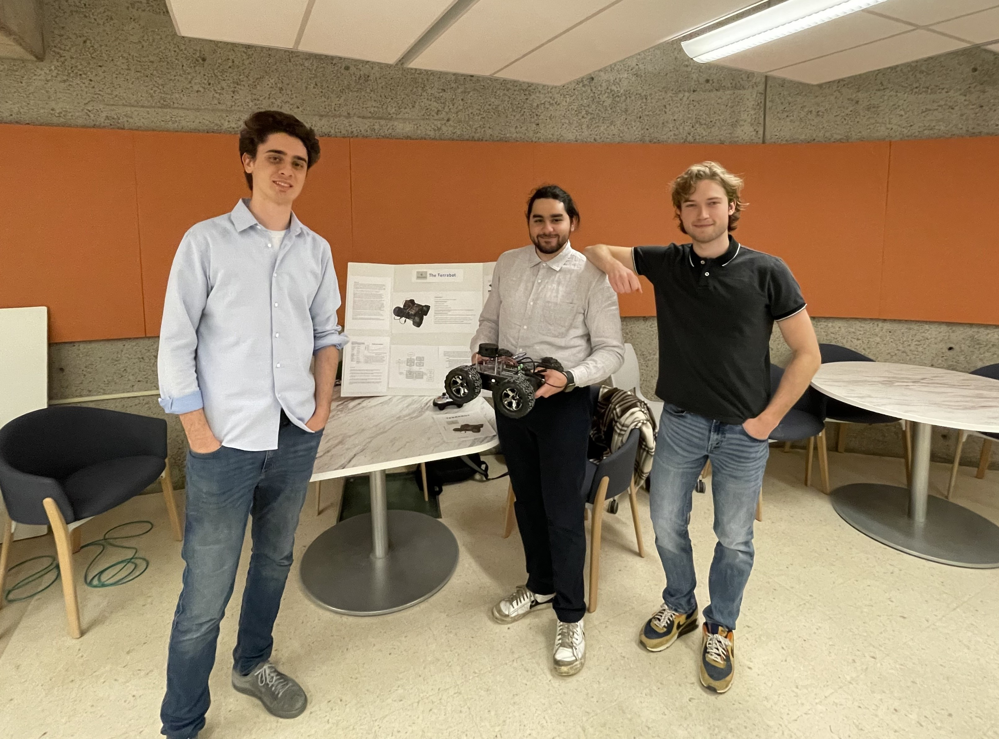
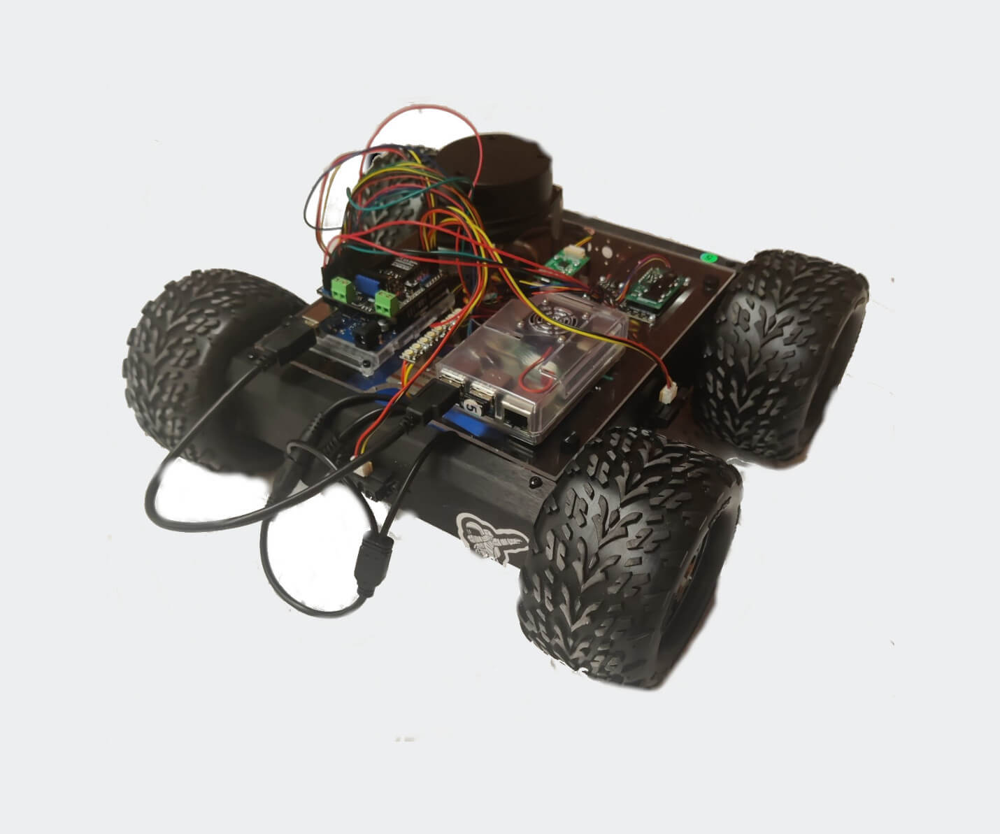
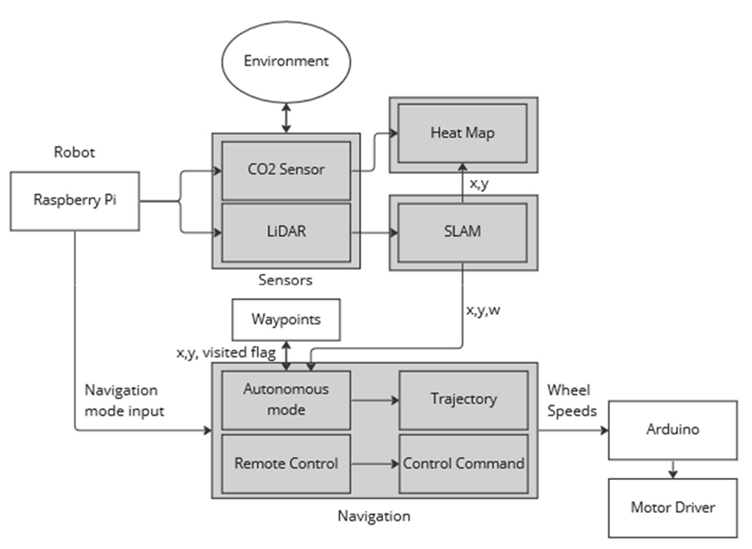
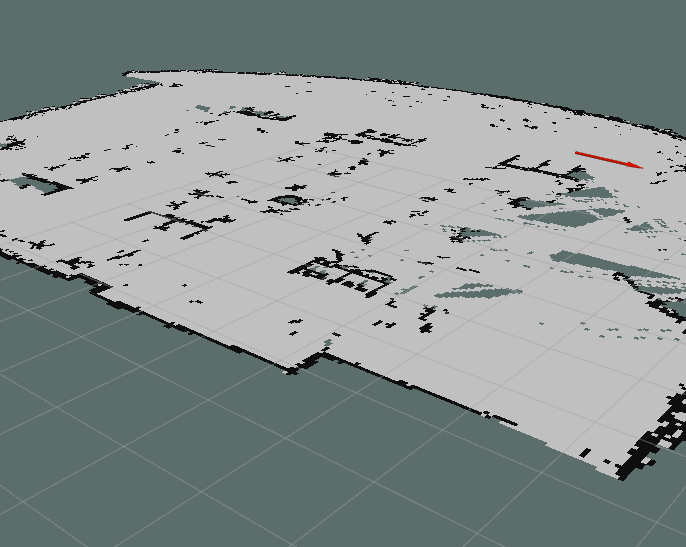
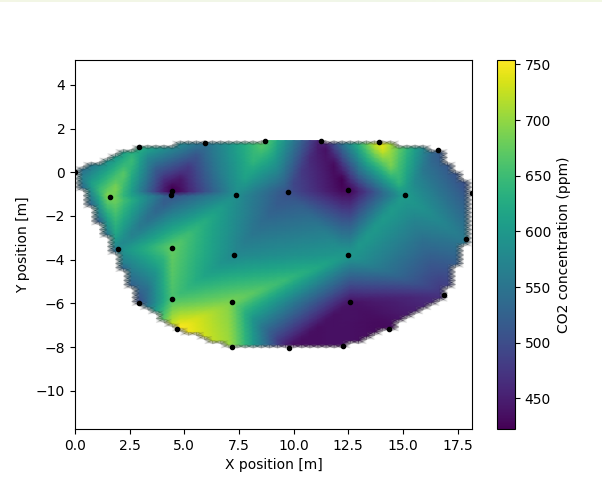

Team photo on demo day, Mechatronics Design II.
Project Overview
The Terraforma Terrabot mobile rover autonomously generate 'heat maps' of CO2 concentration in indoor environments. A Lynx rover was modified with a 2D LiDAR, encoders, and CO2 sensors, equipped with a Raspberry Pi 4, and an Arduino Uno Rev3. The Terrabot was successfully demonstrated to an audience of over 50 students and professors.

The Terraforma mobile rover.
In this project, I contributed the system design, the implementation of Hector SLAM, and the CO2 heat map generation algorithm, see the system architecture below.

System architecture for the Terrabot.
Results & Analysis
SLAM
To generate a map of the environment to correlate CO2 concentrations to, I decided to use Hector SLAM, relying solely on scan matching the 2D LiDAR, given that the Terrabot is a differential drive (encoders are unreliable), and a low-cost gyroscope (angular drift).

RVIZ viewer of Hector SLAM generated map.
Heat Map Generation
The heat_map (ROS) node subscribes to the CO2 measurements and the positions from the Hector SLAM node. Interpolation is done with the LinearNDInterpolator from SciPy.

Generated heat map.
Future Improvements
Terraforma aimed to implement autonomous mode, but ultimately that was out of scope within the limits of a semester. For the purposes of heat map generation however, remote operation by a technician would still be feasible from the point of view of real-world implementation.